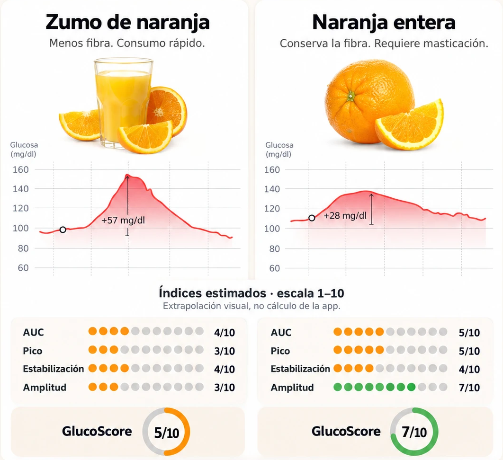

Misma comida, distinta respuesta
Misma fruta. Distinta respuesta.
Zumo de naranja vs. naranja entera: lo que le pasa a tu glucosa.
Desliza →
Hacemos visible lo invisible
Zumo de naranja vs. naranja entera: lo que le pasa a tu glucosa.
Desliza →

Curvas observadas; la respuesta puede variar entre personas. Índices: extrapolación visual, no cálculo de la app.
glucovibes.com